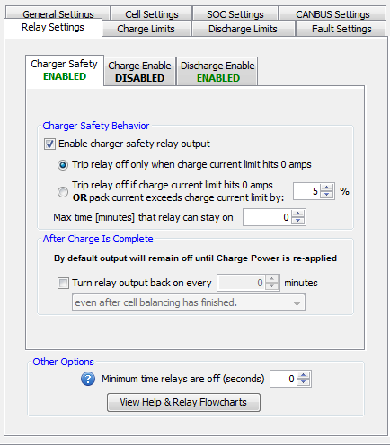

This relay is used by the BMS as a shutdown signal to the charger. This relay is strongly recommended to be enabled. If enabled, this relay will be driven low to allow charging until the BMS determines the charger should shut off (due to high voltage condition or the CCL dips to 0 for example) at which point it will float high (there is no pull-up resistor on the line). This relay can re-engage based on a timer condition.
NOTE: If this relay is enabled, the Charge Current Limit will latch at 0A once the relay output turns off to prevent any further charging. There are several conditions listed on this settings page for re-enabling the output. Once the output is re-enabled then the Charge Current Limit will go above 0A.
**Click here for a functional flowchart of how the relay works.
| < Relay Settings | Charger Safety Functional Flowchart > |